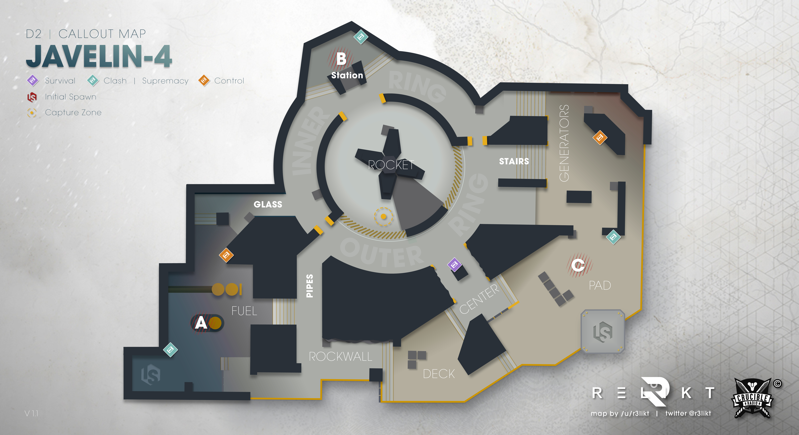
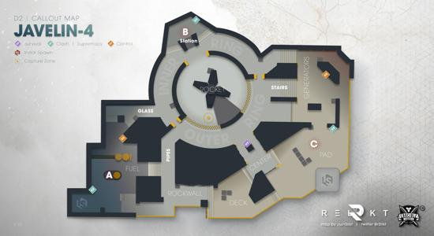

Build. Connect. Dominate.
A custom game engine and multiplayer tech demo built from the ground up. Powered by C++20, inspired by the greats.
Ahamkara is a custom C++20 game engine and multiplayer tech demo built from scratch. It provides the foundational systems needed to build modern networked games: core utilities, a dedicated authoritative server, real-time networking, 3D rendering, physics/collision, animation, audio, and a platform abstraction layer.
The engine follows a clean layered architecture — core libraries ship as versioned CMake packages, while game-specific logic lives in Flashback, the product layer. Ahamkara owns the reusable technology; Flashback owns the shipped experience.


Wish is an independent backend, session, and activity platform that powers online services for games built with Ahamkara. It owns backend behavior without importing game-specific types — keeping a clean boundary between engine, game, and services.
Wish provides session admission, activity routing, heartbeat services, metrics collection, player status tracking, and an HTTP admin server for live monitoring. Its protocol is game-neutral, designed to be consumed by any game client through a lightweight SDK.
Ahamkara draws inspiration from the greats — both in game design and engineering philosophy.
FPS gameplay, tight networking, and seamless match flow. The dedicated server architecture and activity system are shaped by the expectations set by modern competitive shooters.
Inspired by Robert C. Martin's clean architecture principles. Engine, backend, and game are separate concerns with strict dependency direction — no circular dependencies, no hidden coupling.
Built in modern C++20 with deterministic tick loops, zero-overhead abstractions, and data-oriented design. The engine is designed to push hardware without sacrificing code clarity.
Community-driven development with transparent progress. Every system is documented, every decision is tracked, and the entire stack is open for contribution and review.